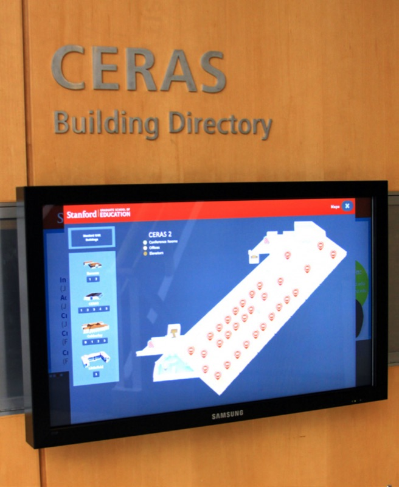
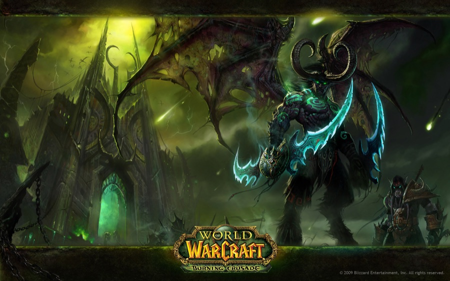
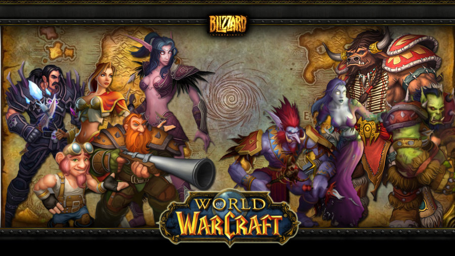

2017
Serverless Microservices on AWS
Built RESTful microservices with the Serverless Framework on AWS — Lambda, API Gateway, S3, DynamoDB, and CloudWatch.

Chief Technology Officer
Leading technology at the Stanford Graduate School of Education — building secure, cloud-first infrastructure that helps every learner succeed.
About
Stephen Wong is the Chief Technology Officer at the Stanford Graduate School of Education. With nearly two decades in education technology, he has a proven track record of driving innovation and implementing cutting-edge solutions in educational environments. His expertise in cloud computing, cybersecurity, and data analytics has been instrumental in transforming the school's digital infrastructure.
A native Californian and lifelong technophile, Stephen believes in the deliberate use of technology to spread ideas, build communities, and solve problems. He is passionate about creating inclusive and effective educational experiences for all learners — with a particular focus on access to learning, tools for student success, and diversity and inclusion.
Experience
Stanford Graduate School of Education
Leads the school's technology strategy and the GSE IT team, supporting the Dean's Office, faculty research, and the University's mission. Drives the modernization of the school's digital infrastructure across cloud computing, cybersecurity, and data analytics.
Previously Director of Information Technology — architected IT strategy, processes, and infrastructure, modernized the data center, led the transition to DevOps, and built out the school's information security program.
Blizzard Entertainment
Founding member of Blizzard's BONS team. The first System Administrator for World of Warcraft, rising through Senior Administrator and Lead to Supervisor. Built data centers, trained the global support team, helped create the Korean and European network operations teams, and oversaw all major incidents across a worldwide platform of 17,000+ servers in 15+ data centers.
Fun fact: Stephen ran the command that launched World of Warcraft worldwide — and did it again for The Burning Crusade.
University of California, Santa Cruz — Computing & Technology Services
Held the highest IT position available to a student. Serviced and maintained every instructional computer lab on campus, wrote specifications, and trained other technicians — the only student worker trusted to work autonomously in the field.
Education
Computer Science
Projects
2017
Built RESTful microservices with the Serverless Framework on AWS — Lambda, API Gateway, S3, DynamoDB, and CloudWatch.

2016
Added spoken, natural-language commands to the GSE's custom touch kiosks using Google's Speech API, a custom API on Heroku, and api.ai (now Dialogflow), with kiosk analytics stored in DynamoDB via AWS Lambda.
2013
Re-engineered the SMILE Plug to support more students with lower power requirements for the developing world. Built a Raspberry Pi proof of concept, led the port of the build process to the Pi 3, and programmed the LED display in Python.
2011
Architected a secure virtual desktop platform on VMware Horizon so GSE staff and researchers can work effectively from any device, anywhere.
2010
Designed a geographically redundant, fault-tolerant backup and replication platform with Veeam, VMware HA/vMotion, and multiple SANs to meet a 6-hour recovery SLA.
2010
Virtualized 100% of the school's physical servers and designed a co-location disaster-recovery site with redundancy at the physical and transport layers.
2010 — 2016
Filled a gap in campus services with a self-hosted CrashPlan PROe deployment — at its peak, 240+ users, 400+ devices, and ~10 TB of data, with DR on AWS.
2007 — 2013
Ran the school's email platform through Exchange 2003, 2007, and 2010, including CAS load balancing and clustered mailbox servers.

2007
Promoted to Supervisor and built a new team responsible for weekly maintenance and patching of the worldwide infrastructure — 17,000+ servers across 15+ data centers in seven countries.

2004
The highest level of operational support for the WoW platform from alpha through beta to launch, involved in every mid-to-major incident.